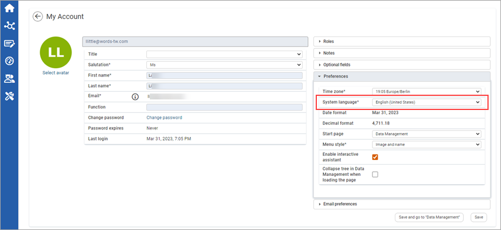

Q: I cannot log in.
A: Make sure that you are in the correct portal – you can identify it if the company's own login page is shown. If you are in the correct portal, use the “Forgot your password?" function. If you are not on the company's login page, ask a colleague or Support for the correct URL. Support can also reset your password for you.
Q: I forgot my password.
A: On the login page there is a button labelled Forgot your password? After entering your username you will receive a link via email. Open the link and create a new password.
Q: Who do I contact if I want to change my email address?
A: Contact Support by clicking on blue button in the upper right corner of the login page or in the system.
Q: Who do I contact for content-related questions?
A: If you have any questions, please contact the contact person of your company.
Q: Who do I contact for technical questions or problems?
A: Contact Support.
Q: The language is always wrong when I log in. How can I change and save the language settings?
A: You can change the language settings under My Account (click your name in the top menu bar). On the Preferences tab on the right side you will find an entry for “System language”. The date and decimal format adapts automatically to the set system language.

Q: I received an error page while using the software. The following symbol appears:

A: If you received an error page with the above symbol, contact Support with a brief description of how you received the error.